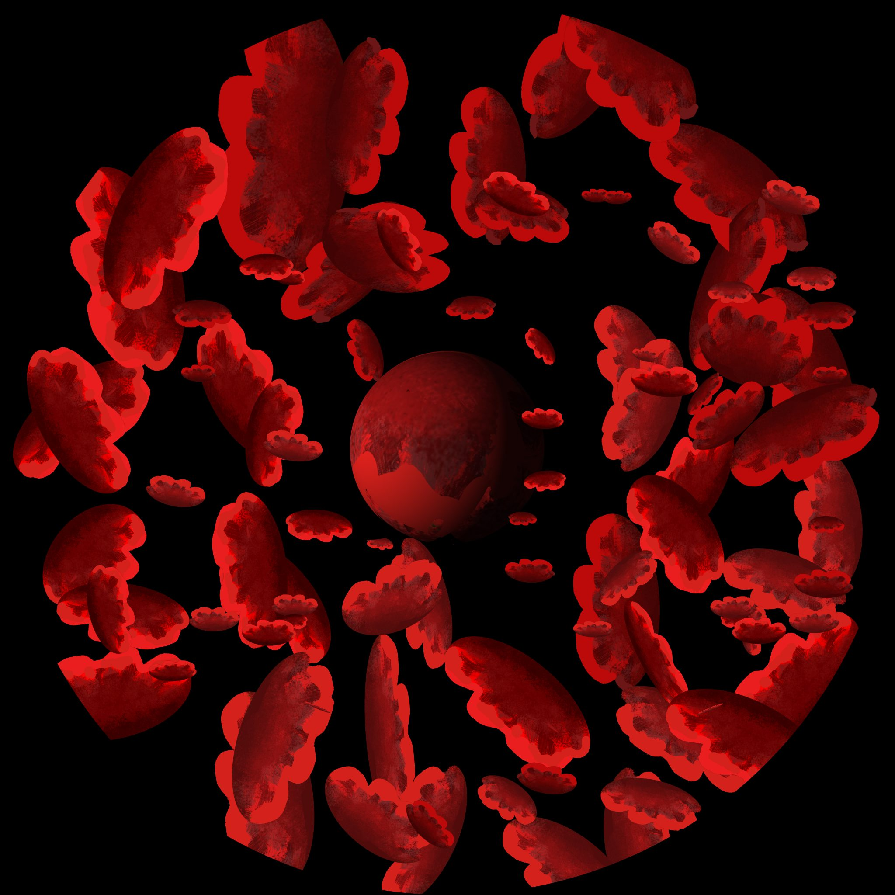
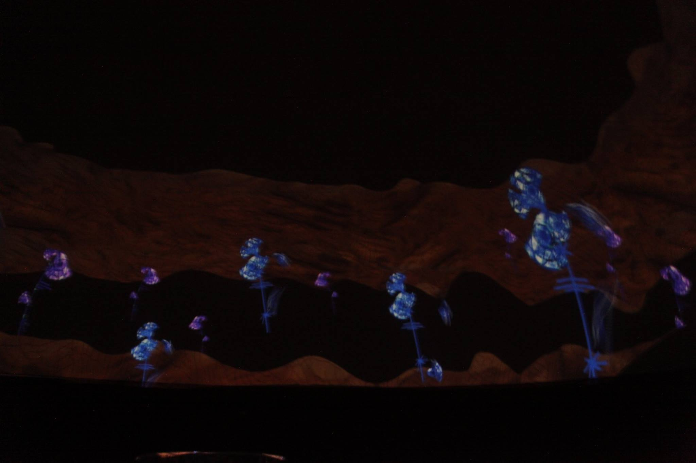

Taller Fulldome
Exploración audiovisual inmersiva sobre temporalidad, percepción y desplazamiento de la imagen en el espacio fulldome.
Tiempo curvo es una obra audiovisual inmersiva realizada en formato fulldome que investiga la relación entre inmersión, distancia y espacialidad, tanto en su dimensión visual como sonora. La pieza explora la pregnancia del color y la forma, así como la diversidad de ritmos y movimientos audiovisuales en un entorno envolvente.
A nivel conceptual, la obra propone una lectura simbólica del ciclo vital, representando el nacimiento, desarrollo y destrucción de la vida en el planeta. Este proceso aparece atravesado por estados de desorientación y mutación, vinculados a transformaciones provocadas por la contaminación y el desequilibrio ambiental.
La obra permite trabajar la relación entre narrativa inmersiva, percepción y espacialidad audiovisual, poniendo en juego preguntas sobre cómo representar temporalidades complejas en formatos no tradicionales.
También resulta especialmente útil para pensar el fulldome como espacio de experimentación pedagógica, donde la producción artística se articula con procesos de investigación-creación, prueba formal y construcción colectiva de conocimiento.
Tiempo curvo forma parte del conjunto de obras desarrolladas en el Taller Fulldome, un espacio de experimentación orientado a la creación de piezas inmersivas y a la reflexión sobre los lenguajes híbridos en entornos de proyección hemisférica.
Dentro de este marco, la obra puede leerse como un ejercicio de exploración formal y conceptual sobre el tiempo en relación con la inmersión, el cuerpo y la experiencia perceptiva del espectador.

▶